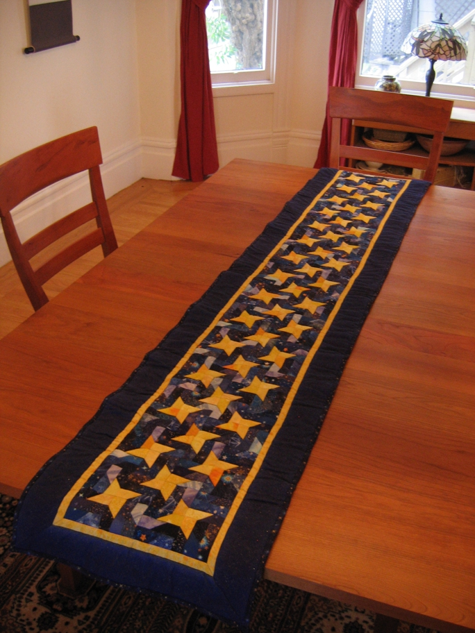

Golden Stars in a Winter Sky was inspired by a full sized quilt pattern in Quilt magazine. The stars are made of many yellows and the blues in the background are all printed with stars. A parallel project of different design was a quilt for granddaughter Amelia and used a similar idea of yellow stars on a blue background with pictures of her family. Two more quilts are planned with these fabrics but I'm waiting for a yellow being hunted on the web.